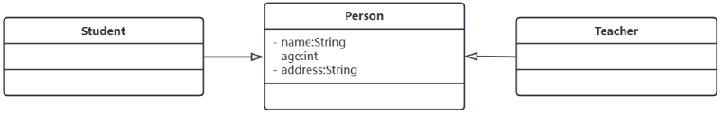
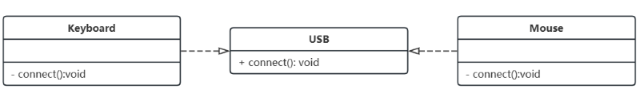
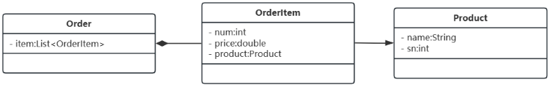

实体类：永久存在，名词
边界类：交互，对话框、窗口、二维码，名词
控制类：执行逻辑，业务逻辑，动词
public class Person{
private String name;
private Integer age;
private String address;
}
public class Student extends Person{
}
public class Teacher extends Person{
}

public interface USB{
void connect();
}
public class Mouse implements USB{
private void connect(){
}
}
public class Keyboard implements USB{
private void connect(){
}
}

public class Product{
private String name;
private Integer sn;
}
public class OrderItem{
private Integer nums;
private double price;
private Product product;
}
public class Order{
private List<OrderItem> item;
}

public class University{
private List<Teacher> teacher;
}
public class Teacher{
private String name;
private String dep;
}
public class Car{
private Engine engine;
private List<tyre> tyres;
}
public class Engine{
private String fac;
private Integer sn;
}
public class Tyre{
private String fac;
private Integer sn;
private String color;
}